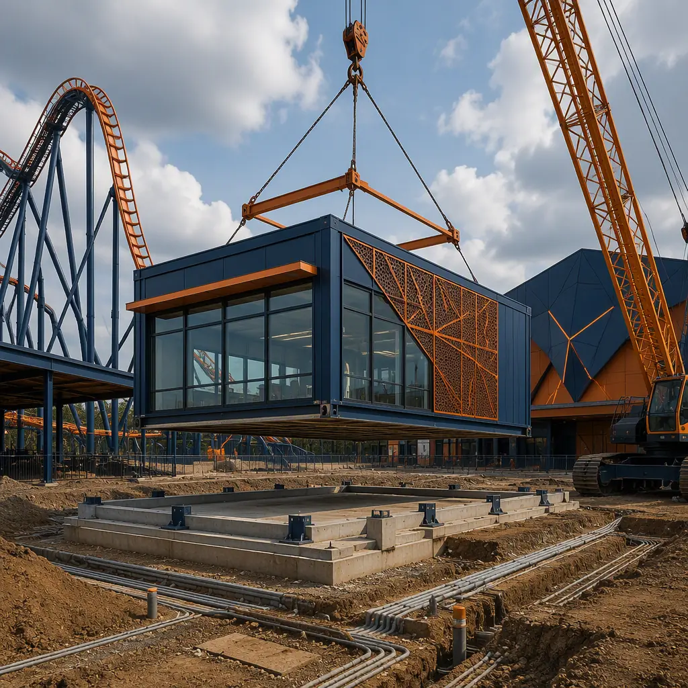
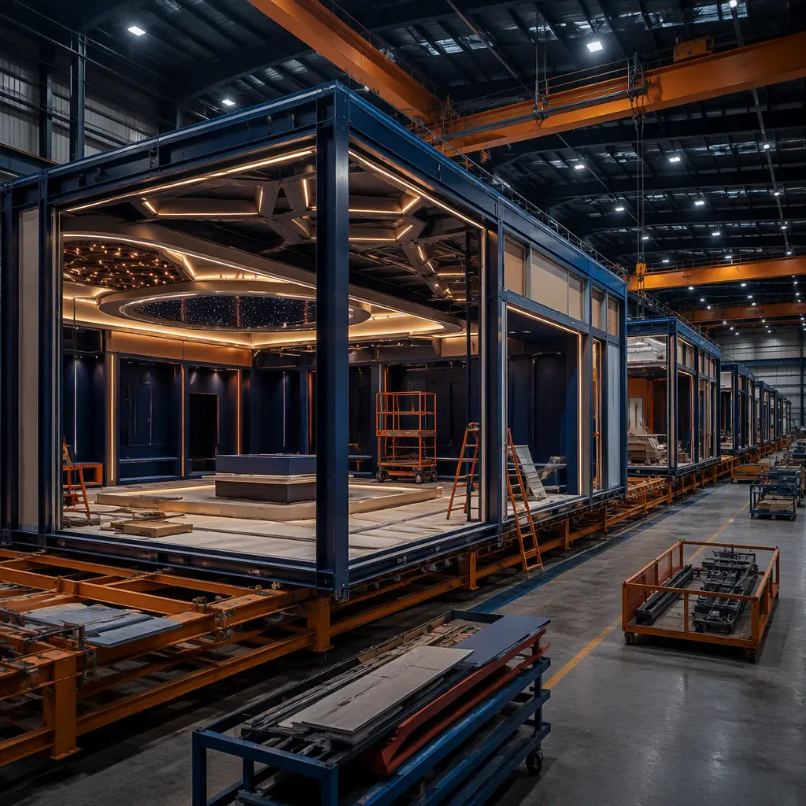
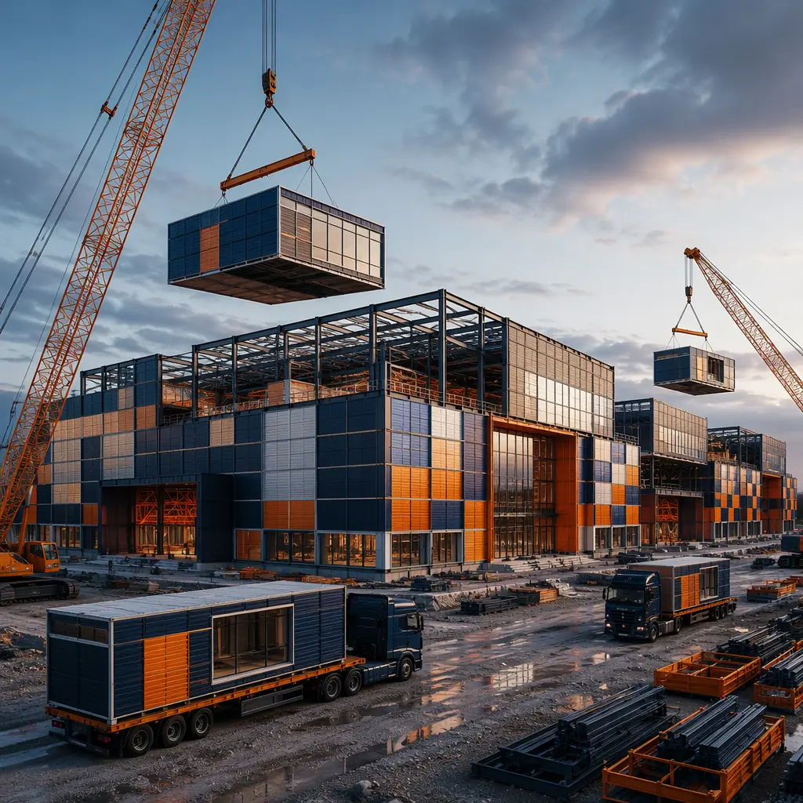

A casino is the ultimate revenue-per-square-foot building: every week of construction delay is a week of gaming revenue that never comes back, and the building itself must satisfy some of the most demanding code, security, and ventilation requirements in commercial construction. That combination — schedule-critical economics plus a tightly specified building program — is exactly what modular construction is built for. Tribal gaming authorities, resort developers, and state regulators are all turning to factory-built casino facilities to open gaming floors in months instead of years, and to do it without betting the whole project on a single site-built schedule. In the United States alone, tribal gaming generates more than $40 billion in annual revenue across 500+ facilities, and a growing share of new and replacement capacity is being delivered as steel-frame modular buildings. This guide explains the gaming facility building program, how modular delivery satisfies the code, security, and ventilation requirements that define it, and what operators should specify before they build.

Why Gaming Operators Are Building Modular
Three forces are pushing gaming operators toward factory-built facilities. First, the "revenue before resort" strategy: operators increasingly open a temporary or phased gaming floor months before the permanent resort is finished, so the property starts generating cash flow while construction continues. Second, tribal gaming authorities face the same scheduling reality as every commercial developer — financing, approvals, and construction loans carry carrying costs, and a 12–18 month site-built schedule is expensive before a single machine is switched on. Third, the gaming floor itself is a highly repeatable building program: once the number of gaming positions, the ceiling height, and the security layout are set, the structural, electrical, and HVAC systems are nearly identical from project to project, and repetition is what factory production does best. The factory quality-gate discipline that makes that repetition reliable — documented inspections at every stage of production — is the same system MODURA applies across all building types, covered in our factory quality control guide.
Modular also fits the phasing strategy that defines modern gaming development. A casino operator can deploy a 6,500–10,000 sq ft interim gaming floor in one factory run, start generating revenue, and later expand with additional modules or repurpose the building as a sportsbook, restaurant, or event space when the permanent resort opens. The structural engineering that makes this possible — steel frames engineered for future expansion and relocation — is covered in our modular steel construction guide, and the phased delivery approach is detailed in our modular construction timeline analysis.
The Gaming Floor Building Program: Positions, Clear Spans, and Flow
A gaming facility is a deceptively simple building program with strict internal requirements. The standard commercial program breaks down as follows:
- Gaming floor (the revenue engine). A typical interim casino runs 100–300 gaming positions at roughly 45–60 sq ft per slot machine (including aisles), which means a 250-position floor needs about 12,000–15,000 sq ft of clear, column-free space — or a more compact 6,500–10,000 sq ft hall at higher density with careful aisle planning.
- Clear spans. Gaming floors need 50–75 ft clear spans with 12–16 ft ceiling heights so slot machine layouts, signage, and surveillance camera sightlines are never blocked by columns. Steel-frame modules and long-span roof modules deliver this without the deep structural zones of site-built framing.
- Surveillance infrastructure. Every gaming position must have an unobstructed camera sightline. The typical specification is a ceiling grid with camera positions on 20–30 ft centers, a dedicated surveillance room with wall-mounted monitor banks, and structured cabling runs sized for 60–120 cameras at 4K resolution.
- Cash and cage infrastructure. A count room, cashier cage, and secure cash handling path with hardened walls, access control, and no public circulation crossing the cash path.
- Guest support spaces. Entry with ID check, restrooms sized to occupancy, a bar or food service point, and a smoking terrace where jurisdiction allows — arranged so guest flow never crosses secure zones.
Every element maps onto factory production. Structural steel is fabricated and welded to tolerance in the factory, camera and cabling raceways are pre-installed in the ceiling cavity, and the count room and cage arrive as pre-built secure modules. For the load-path engineering behind long clear spans — beam sizing, connection design, and deflection control — our modular heavy industrial construction guide covers the structural foundation.

Code and Compliance: Fire Ratings, Life Safety, and Gaming Approval
Casino and gaming facilities carry a heavier compliance load than almost any comparable commercial building, because the code requirements stack: the occupancy is high (assembly occupancy in most jurisdictions), the fire load is elevated (gaming machines are densely packed electrical equipment), and the gaming commission adds its own security and operational requirements on top of the building code. The typical approval chain includes: building code review of the fire-resistance-rated assemblies and means of egress (assembly occupancy, often with 500+ occupants, requiring exit capacity that drives door and corridor design), a state or tribal gaming commission review of the surveillance system, cash handling, and security plan, and local zoning approval for the gaming use itself. The fire-resistance requirements for the occupancy are covered in our modular fire safety guide, and the approval sequence for factory-built structures is covered in our permitting and zoning guide.
A factory-built gaming floor helps at every step because the engineering documentation exists as a complete submittal package from day one. Fire ratings for wall and ceiling assemblies are tested and certified in the factory, the egress plan is drawn against the actual module layout, and the surveillance and cash-handling systems are installed and tested before the building ships — so the gaming commission review starts with documented proof, not promises. This is the same documentation-first approach MODURA applies to government and regulated facilities, detailed in our modular government buildings guide.
Ventilation and Power: The Hidden Engineering of a Gaming Floor
Two systems define the operating performance of a gaming floor, and both are dramatically better when factory-engineered. The first is ventilation. A densely packed slot floor generates intense heat load — each gaming machine dissipates 300–500 watts, so a 250-position floor produces 75–125 kW of equipment heat before counting occupants — and jurisdictions with indoor smoking allowances add a smoke-management requirement that can double the air-change rate. The typical specification is 8–12 air changes per hour with supply diffusers arranged to keep camera sightlines clear, plus a dedicated smoke exhaust system where smoking is permitted. The second is power. A gaming floor draws 1.5–2.5 kW per position, so a 250-position floor needs 375–625 kW of connected load, delivered through a raised floor or overhead busway distribution system with per-position metering and surge protection. Both systems are engineered, installed, and tested in the factory — the same factory-installed approach MODURA applies to the mechanical and electrical systems of any high-performance building, covered in our modular MEP systems guide and our modular HVAC and indoor air quality guide.
| Benchmark | Site-Built Casino | Modular Casino |
|---|---|---|
| Design through grand opening | 14–24 months | 6–9 months |
| Building cost (250-position floor) | $350–500 / sq ft | $260–380 / sq ft |
| Gaming floor clear span | 50–75 ft (field-erected steel) | 50–75 ft (factory-welded steel) |
| Surveillance cabling | Field-installed after framing | Pre-installed in ceiling raceways |
| On-site set window | N/A (sequential trades) | 2–4 weeks |
| Relocatability | None | Full — re-deployable to a new site |
For tribal operators, the economics add a second dimension: a modular interim facility can be financed and opened while the permanent resort is still in design, and the interim building retains resale and relocation value rather than becoming a stranded asset. The financing structures for phased gaming development — including how lenders underwrite a building that can be expanded or relocated — are covered in our modular construction financing guide, and full lifecycle economics are covered in our total cost planning guide.

Interim-to-Permanent Migration: The Phasing Strategy That Changes the Math
The most underappreciated advantage of a modular gaming floor is that it does not have to be a permanent building to be a profitable one. The "revenue before resort" playbook works like this: the operator deploys a factory-built interim gaming floor on the resort site, opens it in month six or seven with 100–250 positions, and starts generating cash flow while the permanent hotel and gaming tower are still under construction. When the permanent facility opens, the interim building is either absorbed into the resort as a sportsbook, restaurant, event venue, or banquet hall — all uses that fit the same clear-span, high-ceiling shell — or relocated to another property in the operator's portfolio. Because the building is steel-framed and bolted rather than poured, relocation is a matter of disconnecting utilities, lifting the modules, and resetting them on a new foundation, a process covered in detail in our modular building relocation guide.
This phasing strategy changes the capital structure of a gaming project. Instead of carrying the full cost of a finished resort during a 24-month construction period, the operator monetizes the site early, and the interim building's cost is partially offset by the revenue it generates. It also changes the risk profile: if the permanent resort is delayed by financing, permitting, or market conditions, the property is still producing revenue, and the interim gaming floor's approvals are not wasted. The same logic drives operators to treat the interim building as a first phase of a master plan rather than a temporary trailer — and because the modules are designed for expansion, the gaming floor can grow by adding modules in a second factory run, a scalability approach detailed in our modular building additions and expansions guide.
Surveillance Design: Cameras, Sightlines, and the Secure Path
Gaming commission rules turn surveillance from a security feature into a building system with measurable geometry. The standard requirement is full coverage: every gaming position, every cash transaction point, and every door into and out of the secure area must be visible on camera, with no blind spots at any angle. That drives the building design in specific ways. Camera positions are typically specified on a 20–30 ft grid over the gaming floor, mounted in the ceiling cavity with sightlines that clear signage, light fixtures, and structural elements — which is why a column-free clear span is not just a layout convenience but a surveillance requirement. The surveillance room must have wall space for a monitor wall (typically 12–24 screens for a 250-position floor), a raised floor for cabling, dedicated HVAC, and restricted access. And the cash path — from machine drop to count room to armored car pickup — must be a continuous secured route with no point where cash crosses public circulation. Factory production delivers all three: the camera grid, monitor-wall room, and secure cash path are built into the modules with the cabling pre-installed and tested, rather than coordinated across site trades after the shell is complete. The same security-first design logic applies to the police and law enforcement facilities MODURA builds for public agencies.
A casino fails on schedule, not on walls: every month of delay is gaming revenue that never comes back. Factory production is the only delivery method where the gaming floor, surveillance infrastructure, ventilation, and power distribution are built, tested, and documented as one integrated building — before it ever reaches the site.
Procurement: What to Specify in a Gaming Facility RFP
Operators should structure procurement around performance, not drawings. The specification should commit to: a guaranteed opening date, documented fire ratings for all assemblies, a surveillance plan with verified camera sightlines over every gaming position, tested ventilation performance at the specified air-change rate, and a cash-handling path that passes the gaming commission's security review. It should also specify the phasing plan — whether the building is interim, permanent, or expandable — so the factory can engineer the steel frame accordingly. The procurement framework for performance-based facility delivery is covered in our modular RFP and procurement guide, and per-square-foot benchmarks across building types are in our modular construction cost guide.
Gaming operators also face a regulatory environment that punishes schedule uncertainty: gaming commission approvals, zoning permits, and financing commitments can expire while a conventional building creeps toward completion. A committed factory schedule keeps those approvals alive — the same reason government agencies, covered in our police and law enforcement facilities guide, and hospitality developers, covered in our modular resort and extended-stay guide, are adopting factory-built delivery for their most schedule-critical buildings.